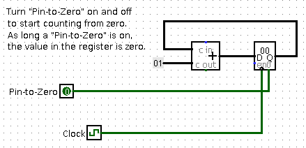
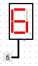
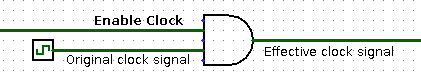
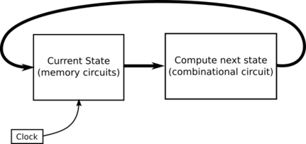
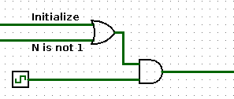

CPSC 220, Fall 2022
Lab 6: Clocked Circuits in Logisim
In the previous lab, you worked with memory circuits in Logisim. The circuits that you built have a "clock" input that determines when values are loaded into the circuit. The clock in a computer is an oscillator that turns its output on and off, over and over. This "ticking" of the clock drives the whole computation. In this lab, you will work with sequential circuits that use a clock component in an essential way, to drive a sequence of operations.
The lab is due next Thursday. You should create a single file named lab6.circ containing the three circuits that you create for this lab. To submit your work, copy your lab6.circ file into your homework folder in /classes/cs220/homework.
Circuit #1: Stopped Clock
Start up Logisim, and use the "Add Circuit" command in the "Project" menu to add a circuit named "Count to 9." (When you save your work, remember to name the file lab6.circ.)
We have already looked at a simple counting circuit, in which each tick of the clock causes the value stored in a register to increase by 1. We actually looked at several versions. For this exercise, you will start with this one, which allows the value in the counter to be reset to zero.

 Build this circuit in Logisim. The register is a standard Logisim 8-bit register from the "Memory" group in Logisim. You can find a "Clock" component in the "Wiring" group.
Then, to make the counting a little more interesting, and make it look more like counting, connect the low-order four bits of the output from the register to the input of a Hex Digit Display, which you will find in the "Input/Output" group in Logisim. A Hex Digit Display is shown on the right, with its input connected to a constant. The display will change as the circuit counts.
To get the clock to run automatically, use the "Ticks Enabled" command in the "Simulate" menu (Control-K). You can set the speed of the clock using the "Tick Frequency" submenu of the "Simulate" menu. You can also use the Poke tool to turn the clock on and of by hand.
As the circuit counts, you will see the hex display change. It will cycle through the hex digits 0, 1, 2, ..., E, F. But who really wants to count using letters! To complete this exercise, you should modify the circuit so that it stops counting when the counter reaches 9. You want to stop the clock when the output of the register is 9. You can use a "Comparator" circuit from the "Arithmetic" group to compare the output of the register to 9. But what to do when they are equal? You would like to stop the clock, but there is no way for a Logisim circuit to stop its clock. What you can do is stop the clock signal from getting through to the register. The basic setup would look like this:

As long as the "Enable-clock" wire is on, the output from the AND gate is the same as the original output from the clock. But when "Enable clock" is turned off, the output from the AND gate can only be off. That is, turning "Enable clock" off effectively stops the clock signal, and it stops any computation that that signal was driving.
Circuit #2: 3N+1
Add another circuit to your project, using the "Add Circuit" command from the "Project" menu. You can name it "3N+1".
A counting circuit is a simple example of a state machine: Its state (the value stored in the register) can change on each clock cycle. And there is a combinational circuit (the adder and the the constant 1 input to the adder) that takes the current state as input and computes the next state as output. The general form of a state machine is simply

The picture doesn't show any way to set the starting state of the machine. In practice, there will have to some way to do that. In the counter circuit, turning the Pin-to-zero input ON sets the state to its initial value, 0 and turning it OFF allows the state to change.
The sequence of states for the counter state machine is just the consecutive integers 0, 1, 2, .... For the second exercise in this lab, you should make a state machine in which the sequence of states is a 3N+1 sequence. For storing the state, you can use a standard Logisim register, but set its number of bits to 32 to allow the possibility of very large values. You will need to design a combinational circuit to compute the next state of the machine from its current state. Recall that for a 3N+1 system, if the current state is N, then the next state is computed as
if N is even
the next value is 2*N
else
the next value is 3*N + 1
Furthermore the sequence ends if the state becomes equal to 1. You should stop the clock in that case.
Finally, you need a way to input an initial value for the sequence. For that, you should add a 32-input to the circuit to specify the initial value, and you should add a 1-bit input, which you might call "Initialize," for applying the initial value. When "Initialize" is ON during a clock cycle, the state should be set to the initial value; that is, the clock tick should copy the initial value into the register. When "Initialize" is OFF, a clock tick should set the state to the next term of the sequence as computed by the above if statement.
When I first built my circuit, it worked fine, except that initialization would not work when the state was 1. The problem was that the clock signal was blocked in that case, so it was impossible for the register value to change. To solve this, I had to make sure that the clock signal was enabled when either N is not 1 or when the "Initialize" input is on. So, my final clock control circuit looked like this:

It would be good to add a 32-bit output to display the current value of the machine. Or maybe use a "Probe" (from the "Wiring" group in Logisim), with its "Radix" property set to "Unsigned Decimal", to display the value in a nicer format. Or both.
Circuit #3: Sequential Multiplier
For your final exercise of the lab, you will build a more complicated state machine, one in which the state is stored in several registers, instead of just one. You can either build the third circuit in "main", or add another circuit with the "Add Circuit" command.
The final circuit for this lab will be the most complicated you have worked on so far. The goal is to multiply two unsigned 16-bit numbers to get a 32-bit product. It is possible to build a combinational circuit that will do that. A version was demonstrated in class that uses fifteen 32-bit adders. However, you will build a sequential multiplier that uses just one 32-bit adder. The circuit is driven by a clock. It will compute the product using a series of up to sixteen additions.
The circuit will have two 16 bit inputs, representing the numbers to be multiplied. It should have a one-bit "Initialize" input, similar to the one in the 3N+1 machine; turning Initialize on for at least one clock cycle, then off, will load the inputs into the circuit and start the computation. The circuit should have a 32-bit output that will show the answer at the end of the computation. (While the computation is in progress, it will show intermediate results.) My version of the circuit has a 1-bit "Done" output that comes on when the answer is complete.
Let A and B be two 16-bit numbers, considered as unsigned. The algorithm for computing the unsigned 32-bit product using a loop can be written as:
Input: A and B (16-bit unsigned)
Output: Product of A and B (32-bit unsigned)
Let A32 = A, zero-extended to 32 bits
Let B16 = B
Let Prod32 = 0
While (B16 is not 0) {
If (low order bit of B16 is 1)
Prod32 = Prod32 + A32
Else
Prod32 = Prod32
A32 = A32 << 1
B16 = B16 >> 1 (logical right shift, with zero fill!)
}
DONE
This algorithm can be implemented using three registers, to hold A32, B16, and Prod32. These registers represent the current state of the computation. Initializing the computation means copying the inputs inputs into A32 and B16 and setting Prod32 to zero. (Note: For setting a register to zero, see Exercise 1. For extending a value from 16 to 32 bits, you can use a "Bit Extender" component from the "Wiring" group in Logisim.) The output of the circuit is simply the output of the Prod32 register. When B16 is zero, the clock should be stopped.
There is another algorithm in which the contents of the contents of the A32 and B16 registers don't change, but you need a 4-bit counting register. In this algorithm, x, y, and z don't have to be stored in registers; they just represent values on wires.
Input: A and B (16-bit unsigned)
Output: Product of A and B (32-bit unsigned)
Let A32 = A, zero-extended to 32 bits
Let B16 = B
Let Prod32 = 0
Let Count4 = 0
Repeat {
Let x = B16 shifted right by Count4
Let y = A32 shifted left by Count4
Let z = low order bit of x
If x is zero
DONE
If z is 1
Prod32 = Prod32 + y
Else
Prod32 = Prod32
Count4 = Count4 + 1
}
You can use either algorithm. In either case, one clock cycle should either do initialization or do one iteration of the loop, depending on the value of the Initialize input. Don't forget to test your circuit!